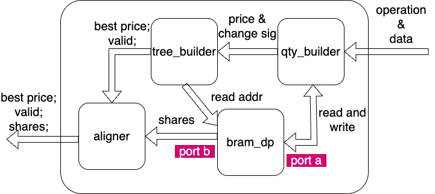

qty_book_wrapper
This module maintains the price-level quantity book for one side of one symbol. It receives compact quantity-delta events from book_builder, updates the total shares at the affected price level, tracks which price level is currently the best, and outputs the best price with its corresponding shares.
Structure
Below privides the structure inside qty_book_wrapper module.

Introduction
Inside symbol_book, there are two instances of this wrapper:
- one ask-side wrapper
- one bid-side wrapper
Both instances consume the same i_qty_msg stream, but each wrapper only reacts to messages for its configured side.
Design Logic
The wrapper splits the problem into four smaller blocks:
- qty_builder: updates the shares stored at one price level and reports when that level changes between empty and non-empty.
- tree_builder: tracks which valid price index is currently the best for this side.
- aligner: delays the best-valid and best-price signals so they line up with the BRAM read data for best shares.
- a dual-port BRAM: stores the live quantity at every tracked price level.
This split is useful because the design needs to answer two different questions at the same time:
- What is the new total quantity at the updated price level?
- After the update, which price level is now the best?
The double-port BRAM keeps the full quantity book, while the tree keeps only the occupancy information needed to find the best index quickly.
Interface
Inputs
i_clk_156: main clock for the wrapper.i_rst: active-high reset.i_qty_msg: packed quantity update from book_builder. Insymbol_book, the format is{bid_ask, price, is_add, d_shares, seq_num}.
Outputs
o_best_valid_aligned: high when the wrapper has a valid best price and aligned best shares.o_best_price_aligned: best price for this side.o_best_shares: total resting shares at the best price.o_seq_num: sequence number attached to the best-price event. When no valid best exists, the output is forced to zero.
Data Path
The wrapper operates like this:
- qty_builder filters
i_qty_msgby side. - It converts the absolute
priceinto a compact price index. - It reads the current quantity from BRAM_dp port A, computes the new quantity, and writes the updated value back.
- If one price level changes from
0 -> non-zeroornon-zero -> 0, it sends that change to tree_builder. - tree_builder updates the best valid price index for the current side.
- The wrapper uses BRAM_dp port B to read the shares stored at that best index.
- aligner delays
best_validandbest_priceso they arrive in the same cycle as the BRAM read data foro_best_shares.
Because the best-price shares come from BRAM_dp, the output path is not purely combinational. The aligner is what makes the three outputs correspond to the same best level.
Price-Level Book
The quantity book is not keyed by order reference. It is keyed by price level.
Best Price Policy
tree_builder stores valid information for all tracked price levels and returns one best index:
- for the bid side, the higher valid price index wins
- for the ask side, the lower valid price index wins
Why Dual-Port BRAM Is Used
The wrapper needs two BRAM accesses that conceptually happen in parallel:
- port A updates the quantity of the price level touched by the newest delta
- port B reads the quantity stored at the current best price level
Using a dual-port BRAM allows the design to keep the live quantity book in one memory while still producing o_best_shares for the current best level.
Latency
The wrapper is pipelined:
- qty_builder uses a read-modify-write sequence for each quantity update
- tree_builder contains a registered mid-level stage
- aligner adds delay so price/valid line up with best-share BRAM data
As a result, the best-price output is not available in the same cycle as the input quantity message.
Limits
- The tree tracks whether a price level is empty or non-empty; it does not store the exact quantity itself.
- The internal FIFOs do not expose backpressure handling at the wrapper boundary.